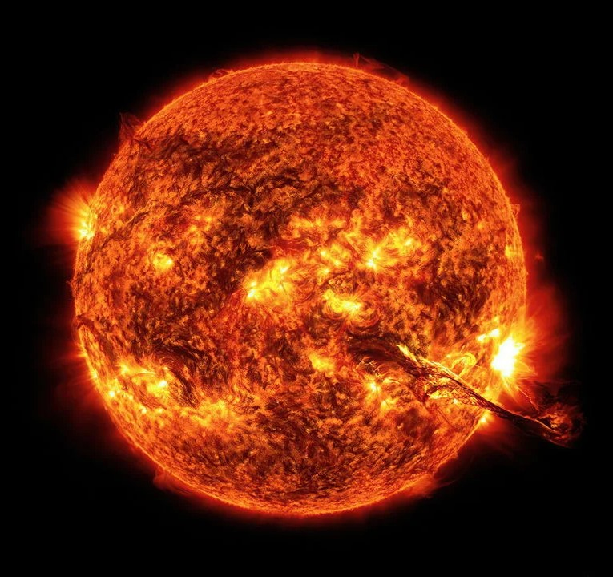
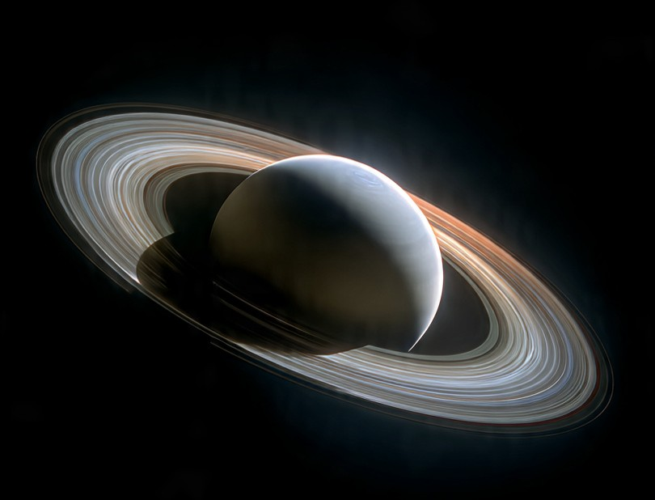
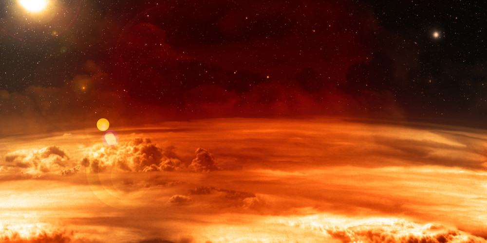
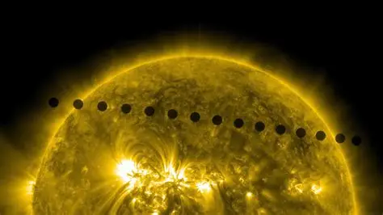
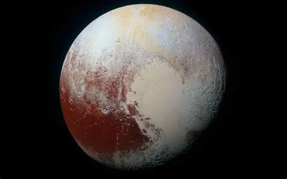
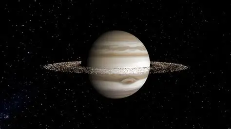
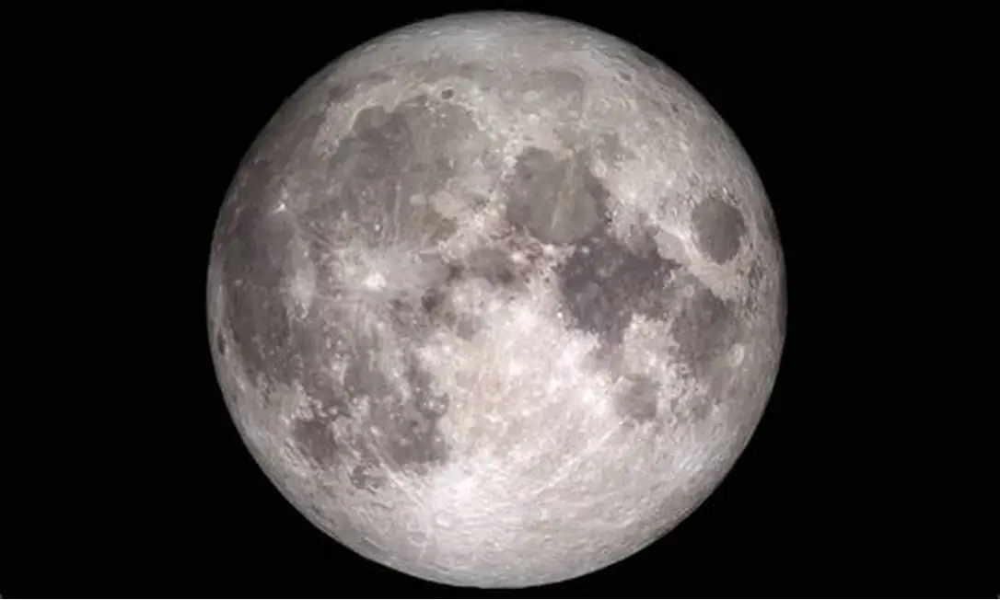
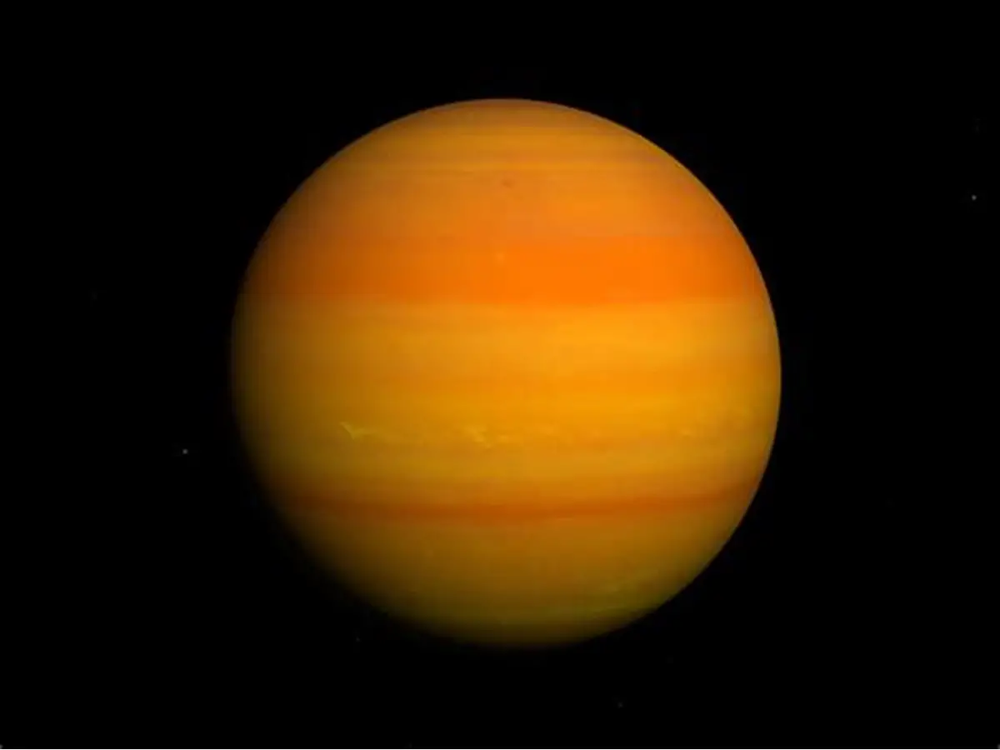

Sol
O Sol representa cerca de 99,86% de toda a massa do Sistema Solar. Ou seja, praticamente tudo gira em torno dele
Ele é a fonte primária de energia para a Terra e os outros planetas do Sistema Solar, sustentando a vida e influenciando o clima e as condições atmosféricas

Saturno Flutua?
Saturno é tão leve (em densidade) que teoricamente flutuaria em um oceano gigante de água
Saturno tem uma densidade média de cerca de 0,69 g/cm³, o que é menor do que a densidade da água (1 g/cm³), na teoria é dito que ele flutuaria se existisse um gigante oceano o suficiente para suportar seu peso

Vênus Infernal
Vênus é mais quente que Mercúrio, mesmo sendo mais distante do Sol, por causa do efeito estufa extremo
O motivo? é o efeito estufa extremo causado pela atmosfera densa de vênus, o alto nivel de dióxido de carbono aprisiona o calor, fazendo com que as temperaturas em Vênus sejam mais altas do que em Mercúrio

Tempo em Vênus é lento
Um dia em Vênus dura mais do que um ano no próprio planeta. Ele gira muito lentamente.
Saturno tem uma densidade média de cerca de 0,69 g/cm³, o que é menor do que a densidade da água (1 g/cm³)

Plutão Nono planeta
Plutão, é ou não é um planeta?
Plutão, apesar de ser chamado de "planeta anão", já foi reconhecido como nono planeta do sistema solar, entretanto perdeu esse status em 2006, logo após a União Astronomica Internacional reconhece-lá.

Saturno não é o único com anéis
Júpiter, Urano e Netuno por mais discretos que sejam tem anéis também
Sim, outros planetas tem anéis tambem, entretanto diferentemente dos anéis de Saturno são mais escuros e dificeis de se enxergar. Em Júpiter por exemplo, seus anéis são feitos de muito mais poeira do que gelo

A Lua está se distanciando cada vez mais
A Lua se distancia cerca de 3 cm a 4 cm da terra a cada ano. é lento, porém, constante
Isso ocorre pela interação gravitacional e das máres. bilhões de anos atrás, é dito que ela era bem mais proxima e parecia maior que o céu

O Planeta diamante
O exoplaneta 55 Cancri tem uma formação estrutural que parece um diamante
Com uma grande composição rica em carbono sob alta pressão, transforma sua propria estrutura em um formato parecidos com um diamante